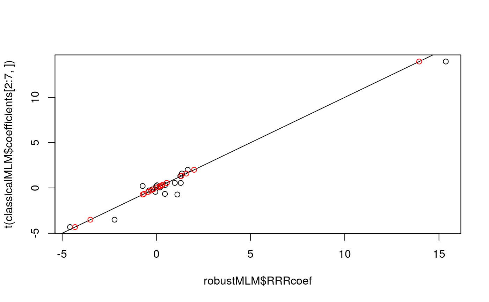

tauRRR.RdFits a reduced-rank regression (RRR) model (for a description, see Izenman(2008)) with a robust procedure that can resist the presence of outliers. It computes tau type estimates, see Bergesio et al. (2020). It fits also a multivariate linear model (MLM) without rank restriction if the rank is chosen properly.
tauRRR(yy, XX, d, efficiency = 0.90)
| yy | vector of response variables, \(n x p\) matrix, each row is a response vector |
|---|---|
| XX | vector of covariates in the multivariate regression problem. Is a \(n x r\) matrix, each row is the corresponding covariate vector |
| d | rank of coefficient matrix. If |
| efficiency | efficiency of the robust estimators, 0.90 by default |
We consider the multivariate linear reduced rank regression (RRR) model given by $$Y = \mu + ABX + \epsilon,$$ where the variables are
\(Y\) is a p x 1 observed response vector
\(X\) is a r x 1 observed covariates vector
\(\epsilon\) is unobserved p dimensional vector of errors
and the unknown parameters (to be estimated) are
\(\mu\) a p x 1 vector of intercepts
A is a full-rank p x d matrix
B is a full-rank d x r matrix
cov(\(\epsilon\)), the p x p covariance matrix of errors \(\epsilon\),
Both coefficient matrices A and B are not unique, but their product p x r matrix C = AB is unique. The rank of C is d \(\le min(p,r)\). The notation refers to Izenman (2008).
List with the following components, of the RRR model described above
tau-estimator for intercept vector
tau-estimator for the coefficient p x r matrix C of rank d
tau-estimator for A, a full-rank p x d matrix
tau-estimator for B, a full-rank d x r matrix
tau-estimator for the covariance matrix of errors, cov(\(\epsilon\))
Izenman, A. J. (2008). Modern multivariate statistical techniques. Regression, classification and manifold learning, New York: Springer.
Bergesio, A., Szretter Noste, M. E. and Yohai, V. J. (2020). A robust proposal of estimation for the sufficient dimension reduction problem
# We work with Example 6.3.3, Chemical Composition of Tobacco, from # Izenman (2008). Dataset available in \link[rrr]{tobacco} or in # \url{https://astro.temple.edu/~alan/tobacco.txt} library(rrr)#> #>#> #> #>data(tobacco) XX = as.matrix(tobacco[,4:9]) # covariates yy = as.matrix(tobacco[,1:3]) # response vector ############################### # RRR model with d=2 ############################### # robust MLM fit robustRRR2 = tauRRR(yy, XX, d=2)#># maximum likelihood MLM, with arbitrary covariance of errors matrix maxliRRR2 = MLE(yy, XX, d=2) ############################### # robust MLM fit ############################### robustMLM = tauRRR(yy, XX, d=3) # classical MLM, with covariance of errors a multiple of identity classicalMLM = lm(yy ~ XX) # maximum likelihood MLM, with arbitrary covariance of errors matrix maxlikMLM = MLE(yy, XX, d=3) # to show that the three of them agree, we can do any of the following # 1. Verify they span the same column space library(pracma) angle_AB(orth(robustMLM$RRRcoef),orth(t(classicalMLM$coefficients[2:7,])))#> [1] 0.000000e+00 0.000000e+00 8.537736e-07#> [1] 0.000000e+00 1.478779e-06 9.697005e-06#> [1] 0.000000e+00 1.707547e-06 9.391510e-06# 2. Plot coefficients estimated by every method plot(robustMLM$RRRcoef,t(classicalMLM$coefficients[2:7,]))# 3. Compute maximum absolute difference in coefficients estimated by every method max(abs(t(classicalMLM$coefficients[2:7,])-maxlikMLM$gamma%*%maxlikMLM$beta))#> [1] 8.881784e-14#> [1] 1.838174